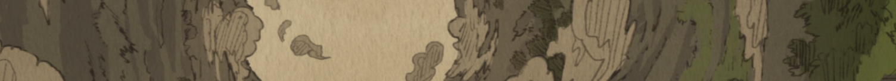

TOWN OF ORTH

1ST EDGE OF THE ABYSS

2ND FOREST OF TEMPTATION
3RD GREATE FAULT

4TH THE CUP OF GIANTS

5TH SEA OF CORPSES
6TH THE CAPITAL OF THE UNRETURNED
7TH THE FINAL MAELSTROM

THE DEEPEST POINT